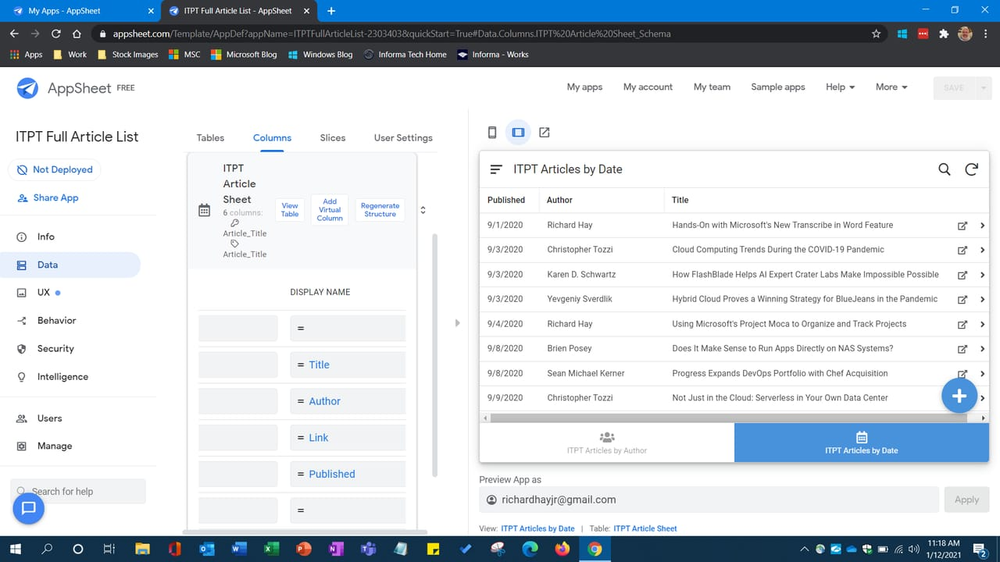
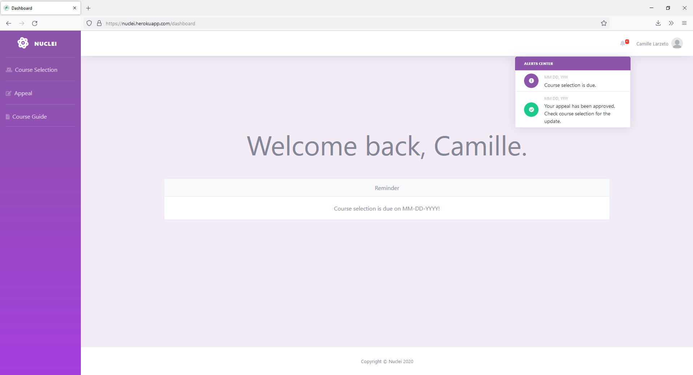
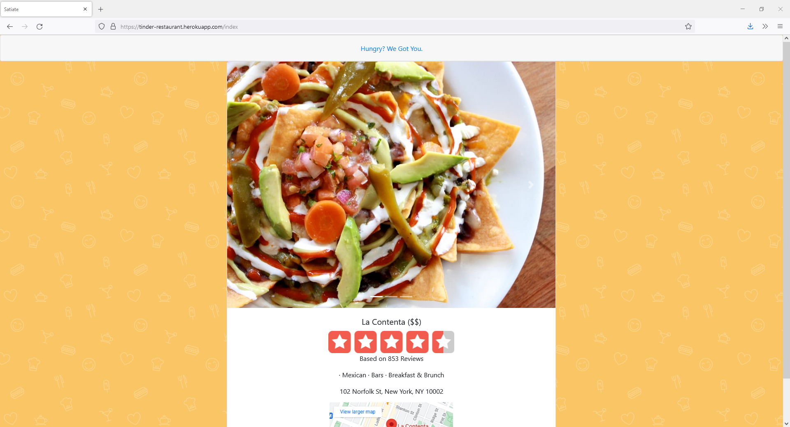

A software engineer with a passion for building things that work and make people's lives easier. I've spent the last few years owning and building internal tools used by engineering and support teams, and I like tackling interesting and fun problems. Currently open to new opportunities.
A Google AppSheet clone. Architectedd the entire frontend from scratch, implementing role-based access control, full CRUD record operations, dynamic table/detail views, session caching, and backend API routes.
View Repo
When Bronx Science shifted to using Talos as their new course selection service, it was plagued with shortcomings. Here is Nuclei, an attempt at overcoming those drawbacks and improving the service.
View Repo
Satiate is a Tinder-esque web application that helps users find a new restaurant. Explore different cuisine or look for a specific type. Swipe left to continue browsing restaurants and swipe right to view a restaurant's Yelp page.
View Repo